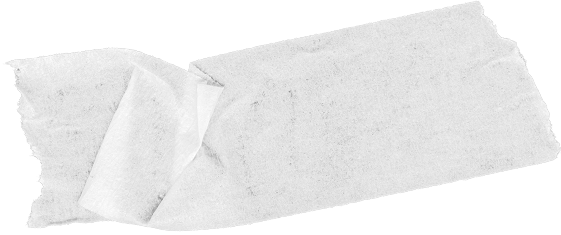
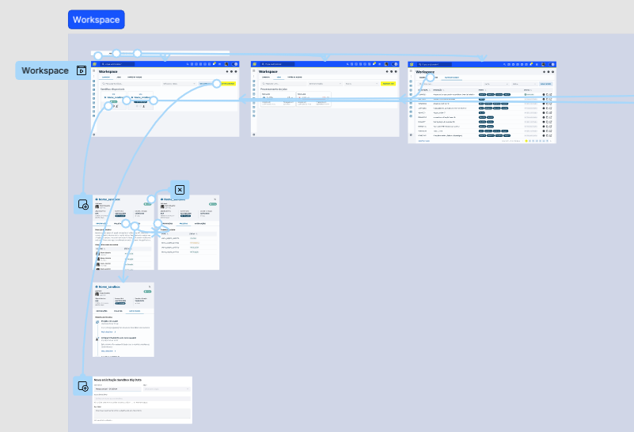
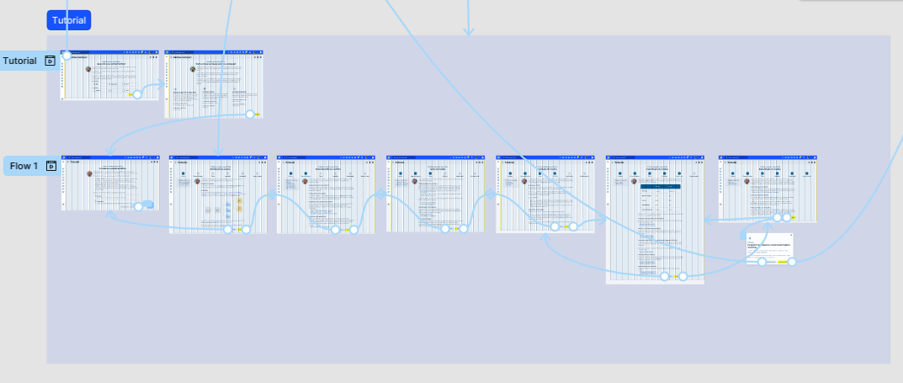
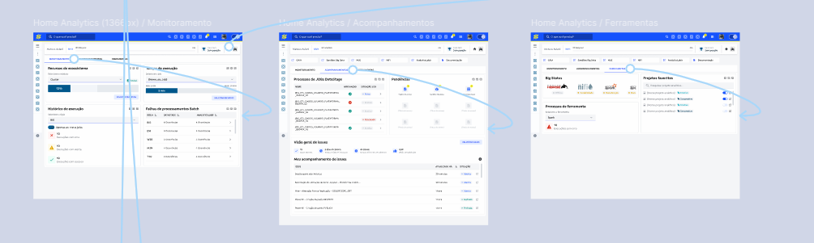
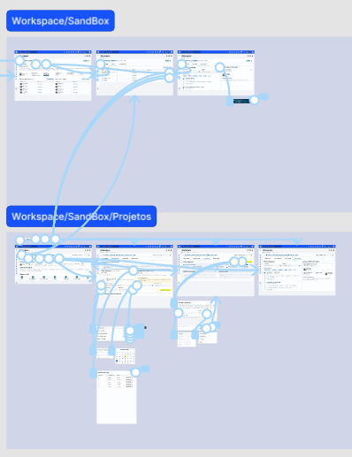
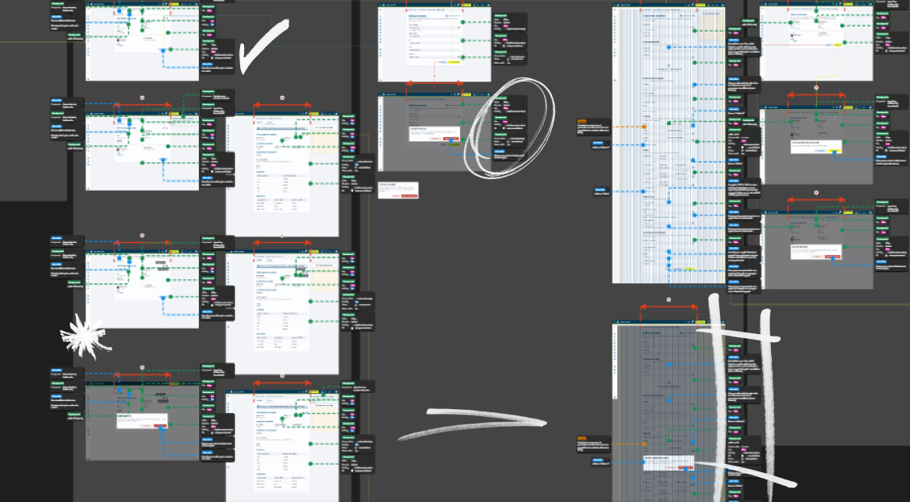

Mais de 20 ferramentas e funcionalidades disponíveis
A plataforma apresentava alta complexidade de uso, com processos fragmentados e documentação desatualizada.
CONTEXTO
Este projeto de UX teve como objetivo aprimorar e simplificar o processo de criação de projetos analíticos e inteligência artificial em uma plataforma interna.
A plataforma em questão é um ambiente integrado de desenvolvimento usado por equipes de dados, engenharia e ciência de dados.
A Plataforma Analítica e IA é o ambiente corporativo oficial que oferece ferramentas, APIs, operações e acessos para que os usuários desenvolvam diversos projetos, como modelos analíticos, ETLs, treinamentos de máquinas, criação de agentes e visualização de dados. Ela suporta tanto experimentação quanto a implantação de soluções em produção, contando com suporte técnico especializado e garantindo segurança e governança durante todo o processo.
A plataforma apresentava alta complexidade de uso, com processos fragmentados e documentação desatualizada.

A quantidade de etapas para publicação em produção era confusa, aumentando o tempo de implantação
O tráfego de usuários era considerado alto, mas as taxas de evasão também eram consideradas altas.
Conduzi processos de descoberta, pesquisas e entrevistas para compreender as dores dos usuários
Utilizei dados provenientes das bases disponíveis para embasar propostas e soluções por métricas
Prototipei interfaces para obter feedback de usuários, avaliar viabilidade técnica e realizar testes
Acompanhei o projeto após entrega para avaliar os resultados obtidos pelas soluções entregues


A crítica mais comum era sobre a instabilidade de algumas ferramentas da plataforma. E o principal elogio era a capacidade técnica de uso para os diversos tipos de projetos.
Os usuários comentaram diversas vezes sobre uma curva de aprendizagem acentuada, tanto para aprender as linguagens disponíveis assim como saber quais as ferramentas adequadas para as necessidades de seus projetos
Outra crítica comum era a falta de uma documentação centralizada e atualizada. Os usuários explicavam que buscavam suporte por meio de issues, pois não conseguiam prosseguir apenas com as informações disponíveis.


As principais personas definidas se diferiam mais pela necessidade de solução do que a atividade desempenhada pelo usuário.
Foi importante separar os usuários pelo nível de conhecimento, pois ao realizar análises mais profundas, percebeu-se que este fator interferia bastante o comportamento do usuário dentro da plataforma.
Cada persona apresentava necessidades especificas para desempenho de suas atividades de acordo com regras de acesso definidas que influenciavam suas jornadas.


A falta de padronização visual gerava uma carga cognitiva maior nos usuários, pois cada ferramenta possuía características diferentes, gerando a necessidade de aprender o funcionamento de cada ferramenta
A complexidade de assuntos e as diversas etapas dentro de fluxos não padronizados, apresentavam alta carga cognitiva fazendo os usuários abandonarem certas etapas
A ausência de feedback visual entre transições de etapas gerava insegurança e retornos desnecessários ao início do fluxo, por vezes não salvando projetos já iniciados


Nas entrevistas ficou claro a necessidade de uma organização padronizada e simplificada de menus, conceitos e descrições para que os usuários pudessem realizar escolhas mais assertivas com menos dúvidas
Maioria dos usuários demonstravam uma visão voltada para produto e solução e não de separação por ferramenta, o que por vezes acabavam gerando dúvidas por qual etapa começar
Os comentários dos usuários corroboravam com os feedbacks iniciais, com essa oportunidade aproveitou-se para detalhar essas necessidades e obter uma compreensão mais ampla dos problemas
Jornadas guiadas por tipo de solução e posterior escolha da ferramenta
Descrições e conceitos explícitos para orientar a escolha dos usuários
Atualização e centralização da documentação
Padronização das interfaces num ambiente unificado




TELAS PROTOTIPADAS
TESTES REALIZADOS
PARTICIPANTES NOS TESTES



PONTOS DE NPS
PONTOS DE CES
PONTOS DE CSAT
NOVOS USUÁRIOS
USUÁRIOS ATIVOS
EVASÃO DE USUÁRIOS
NOVOS PROJETOS
PROJETOS IMPLANTADOS
TEMPO DE IMPLANTAÇÃO